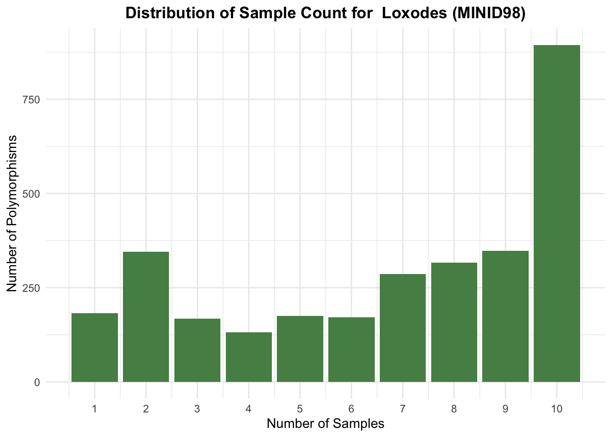
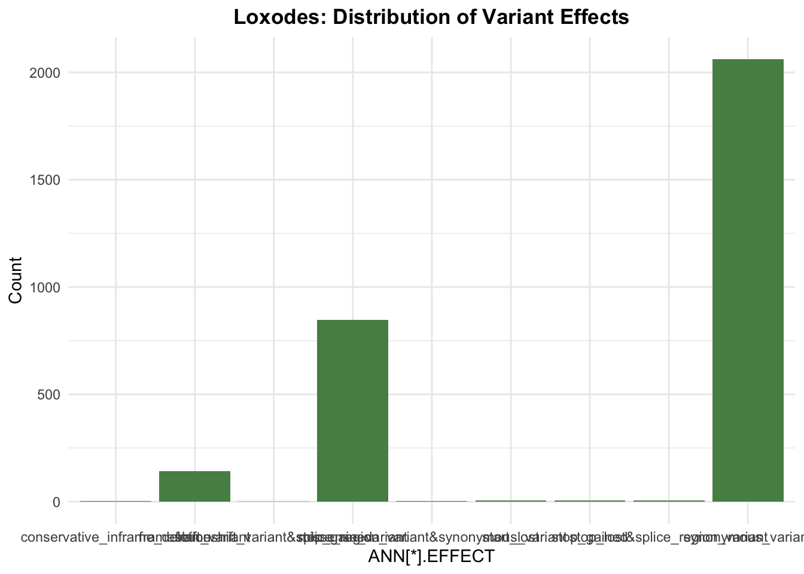
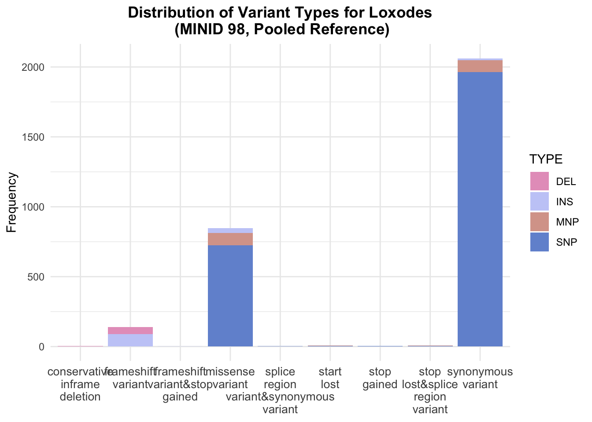
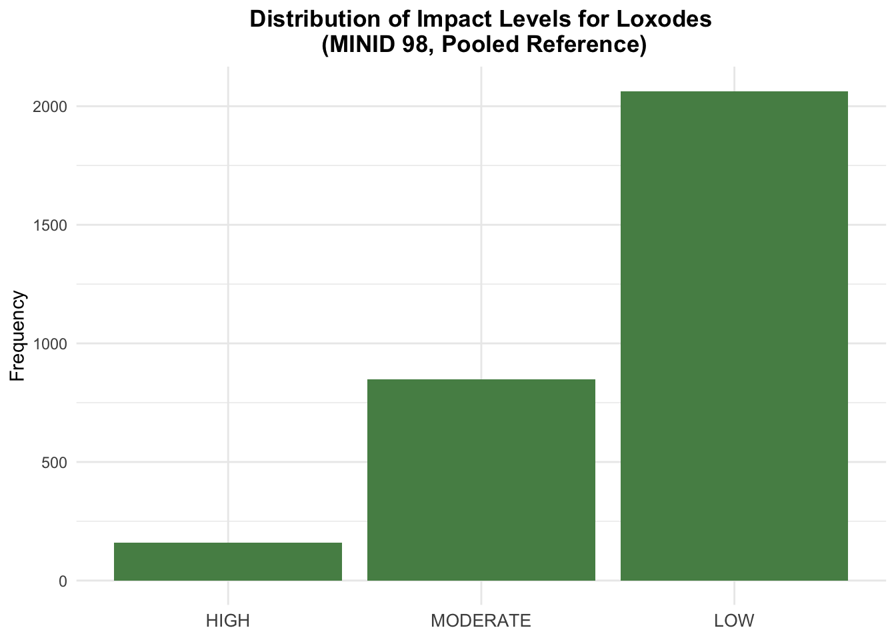
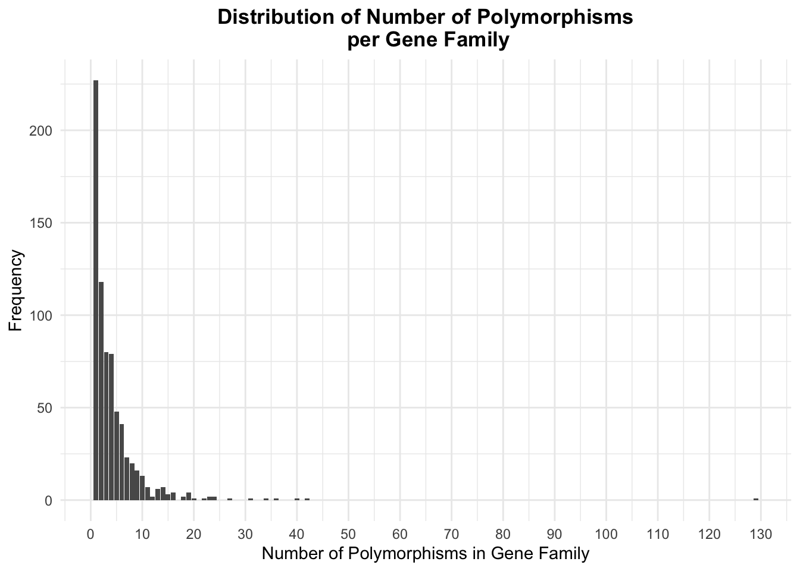
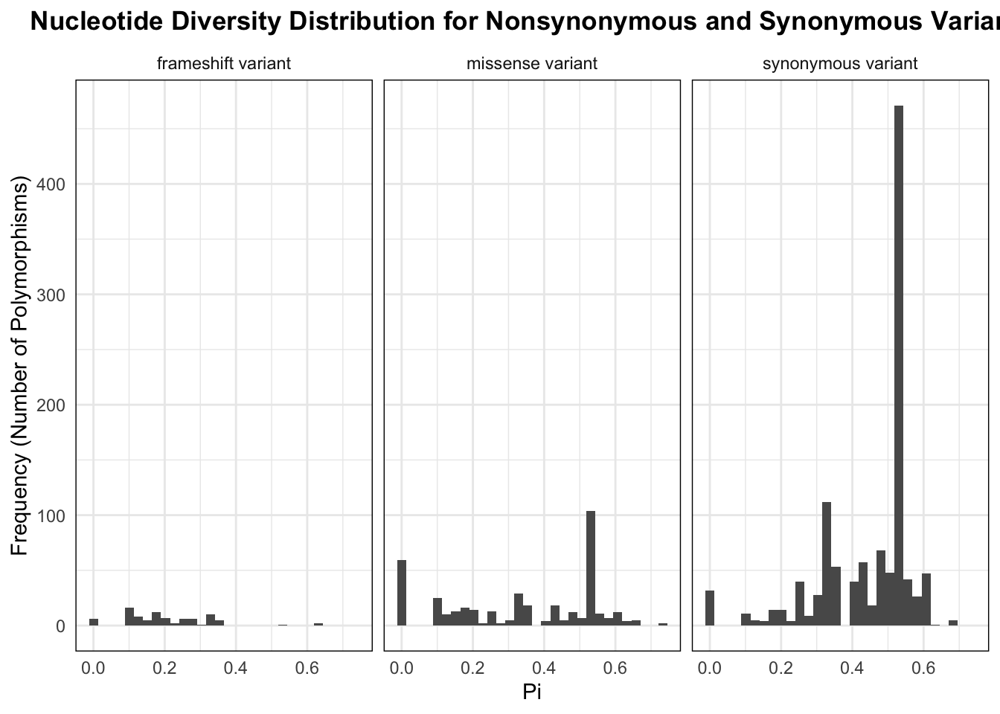
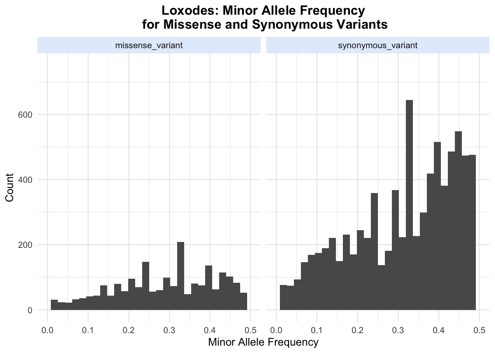

After running SnpEff, we have an annotated vcf file. However, there can be different numbers of columns for different variants, because some variants are labelled with multiple effects.
This complicates reading the vcf file into R. However, SnpSift offers a simple solution, and is already installed once you’ve installed SpnEff.
The vcfEffOnePerLine.pl script generates a tab delimited file where each annotated effect is on a different line. We can easily read this file into R.
To get this tsv file, navigate to SnpEff where the annotated vcf file is, and run a command like the following.
cat annotated_vcf_file \
| ./scripts/vcfEffOnePerLine.pl \
| path/to/java -jar SnpSift.jar extractFields - CHROM ID POS REF ALT NS AC AB DP "ANN[*].ALLELE" "ANN[*].EFFECT" "ANN[*].IMPACT" "ANN[*].BIOTYPE" "ANN[*].RANK" > annotated_tsv_file
Now we can analyze the data in R.
library(tidyverse)
library(vcfR)
library(wesanderson)
#load vcf as vcfR object
lox_98 <- read.vcfR("./Data/loxodes_pooled/all_filtered_98.vcf")
#read in annotated vcf data (in tsv format)
lox_ann <- read_tsv("./Data/loxodes_pooled/lox_98_CDS_filtered_3")One useful aspect of our data to be familiar with is how well supported variants are by individuals.
Here, we look at the distribution of how many individuals support a variant with the plot_num_sample_distribution function. We can see that many variant sites are supported by 10 individuals, and we still retain most data by filtering out sites supported by 3 individuals or fewer individuals.
plot_num_sample_distribution <- function(vcf, sample_name = "", fill = "#4a779e") {
ad <- extract.gt(vcf, element = 'AD')
samples <- ad %>%
as_tibble(rownames = "ID") %>%
pivot_longer(cols = 2:(ncol(ad) + 1), names_to = "Sample") %>%
filter(is.na(value) == FALSE) %>%
group_by(ID) %>%
summarize(num_samples = n())
samples %>% ggplot() +
geom_histogram(aes(x = num_samples), stat ="count", fill = fill) +
labs(x = "Number of Samples", y = "Number of Polymorphisms", title = paste("Distribution of Sample Count for ", sample_name)) +
theme_minimal() +
theme(plot.title = element_text(face = "bold", hjust = .5)) + scale_x_continuous(breaks = (0:ncol(ad)))
}
plot_num_sample_distribution(lox_98, sample_name = "Loxodes (MINID98)", fill = "#568D55")
Now we can make a simple plot to look at the effect of the variants, as annotated by SnpEff. The majority are synonymous (no amino acid change) and missense (amino acid change) which would be expected.
lox_ann %>%
group_by(`ANN[*].EFFECT`) %>%
summarize(Count = n()) %>%
ggplot(aes(x = `ANN[*].EFFECT`,
y = Count)) +
geom_bar(stat = "identity", fill = "#568D55") +
theme_minimal() +
labs(title = "Loxodes: Distribution of Variant Effects") +
theme(plot.title = element_text(face = "bold", hjust = .5))
We can look at the type of variant in addition to its effect. As expected, the vast majority of variants are single nucleotide polymorphisms.
lox_ann_type <- lox_ann %>%
mutate(TYPE = case_when(
nchar(ALT) == 1 & nchar(REF) == 1 ~ "SNP",
nchar(ALT) > nchar(REF) ~ "INS",
nchar(REF) > nchar(ALT) ~ "DEL",
nchar(ALT) == nchar(REF) & nchar(ALT) != 1 ~ "MNP"
),
GENE_FAMILY = substr(CHROM,
start = nchar(CHROM) - 9,
stop = nchar(CHROM)))
lox_ann_type %>%
group_by(`ANN[*].EFFECT`, TYPE) %>%
summarize(Count = n()) %>%
ggplot(aes(x = str_replace_all(`ANN[*].EFFECT`, "_", "\n"),
y = Count,
fill = TYPE)) +
geom_bar(stat = "identity") +
labs(x = NULL, y = "Frequency",
title = "Distribution of Variant Types for Loxodes\n (MINID 98, Pooled Reference)") +
theme_minimal() +
theme(plot.title = element_text(face = "bold", hjust = .5),
axis.text.x = element_text(size = 10)) +
scale_fill_manual(values = wes_palette("GrandBudapest2"))
We can look at the distribution of impact levels as well. This is a simple categorization done by SnpEff to estimate the extent of the impact of the variant. Synonymous variants, for example, are classified as having low impact, missense variants as moderate impact, and frameshift variants as high impact.
lox_ann %>%
group_by(`ANN[*].IMPACT`) %>%
summarize(Count = n()) %>%
ggplot(aes(x = factor(`ANN[*].IMPACT`, levels = c("HIGH", "MODERATE", "LOW")),
y = Count)) +
geom_bar(stat = "identity", fill = "#568D55") +
labs(x = NULL,
y = "Frequency",
title = "Distribution of Impact Levels for Loxodes\n (MINID 98, Pooled Reference)") +
theme_minimal() +
theme(plot.title = element_text(face = "bold", hjust = .5),
axis.text.x = element_text(size = 10))
There is significant variation in the number of polymorphisms per gene family. Once we look at the distribution, it may be interesting to look further into the gene families with a high degree of polymorphism.
lox_ann_type %>%
group_by(GENE_FAMILY) %>%
summarize(n = n()) %>%
ggplot(aes(x = n)) +
geom_bar(stat = "count") +
scale_x_continuous(breaks = seq(0, 150, by = 10),
labels = seq(0, 150, by = 10)) +
labs(x = "Number of Polymorphisms in Gene Family",
y = "Frequency",
title = "Distribution of Number of Polymorphisms\n per Gene Family") +
theme_minimal() +
theme(plot.title = element_text(face = "bold", hjust = .5))
By joining the annotated vcf data with the nucleotide diversity data, we can look at how nucleotide diversity differs for different kinds of variants. It’s important to filter to prevent missing data from clouding the analyses.
nuc_div <- read_tsv("./Data/loxodes_pooled/nuc_div.sites.pi")
lox_ann_div <- lox_ann_type %>%
left_join(nuc_div, by = c("CHROM" = "CHROM", "POS" = "POS"))
#takes vcfR object, minimum number of samples that must have a variant, and minimum number of samples that must have a called genotype
get_twice_filtered_sites <- function(vcf, min_var = 3, min_geno = 3) {
ad <- extract.gt(vcf, element = 'AD')
samples_ad <- ad %>%
as_tibble(rownames = "ID") %>%
pivot_longer(cols = 2:(ncol(ad) + 1), names_to = "Sample") %>%
filter(is.na(value) == FALSE) %>%
group_by(ID) %>%
summarize(num_samples = n()) %>%
filter(num_samples >= min_var) %>%
pull(ID)
gt <- extract.gt(vcf, element = 'GT')
samples_gt <- gt %>%
as_tibble(rownames = "ID") %>%
pivot_longer(cols = 2:(ncol(ad) + 1), names_to = "Sample") %>%
filter(is.na(value) == FALSE) %>%
group_by(ID) %>%
summarize(num_samples = n()) %>%
filter(num_samples >= min_geno) %>%
pull(ID)
intersect(samples_gt, samples_ad)
}
#get filtered sites
lox_filtered_sites <- get_twice_filtered_sites(lox_98)
#plotting nucleotide diversity distribution for synonymous, missense, and frameshift variants
lox_ann_div %>%
mutate(ID = paste(CHROM, POS, sep = "_")) %>%
filter(ID %in% lox_filtered_sites) %>%
filter(`ANN[*].EFFECT` == "synonymous_variant" |
`ANN[*].EFFECT` == "missense_variant" |
`ANN[*].EFFECT` == "frameshift_variant") %>%
ggplot(aes(x = PI)) +
geom_histogram() +
facet_wrap(~str_replace(`ANN[*].EFFECT`, "_", " ")) +
theme_minimal() +
labs(x = "Pi", y = "Frequency (Number of Polymorphisms)", title = "Nucleotide Diversity Distribution for Nonsynonymous and Synonymous Variants") +
theme(plot.title = element_text(face = "bold", hjust = .5),
panel.border = element_rect(color = "black", fill = NA))
Here, we look at the distribution of minor allele frequency for synonymous and nonsynonymous variants. A higher proportion of low-frequency variants in non-synonymous SNPs is predicted under purifying selection on nonsynonymous SNPs, as discussed in this paper by Gayral et al.
Note that SnpEff uses the term ‘missense’ to refer to variants that produce an amino acid change.
#extract allele depth information
ad <- extract.gt(lox_98, element = "AD")
#get depth of most abundant allele
ad1 <- masplit(ad, record = 1)
#get depth of second most abundant allele
ad2 <- masplit(ad, record = 2)
#get allele balance for minor allele (second most abundant allele)
ab2 <- ad2 / (ad1 + ad2)
#convert allele balance data to tibble to facilitate joining
ab2 <- ab2 %>%
as_tibble(rownames = "ID")
#join allele balance data with nucleotide diversity data
minor_af_joined <- lox_ann %>%
mutate(ID = paste(CHROM, POS, sep = "_")) %>%
inner_join(ab2, by = c("ID" = "ID"))
#converting data to tidy format
#change the cols argument to whatever columns correspond to the cell names (ex: LKH560)
minor_af_joined <- pivot_longer(minor_af_joined,
cols = 17:26,
names_to = "Individual",
values_to = "Minor_AF")
#plot just missense and synonymous variants
minor_af_joined %>%
filter(`ANN[*].EFFECT` == "missense_variant" | `ANN[*].EFFECT` == "synonymous_variant") %>%
ggplot(aes(x = Minor_AF)) +
geom_histogram() +
facet_wrap(~`ANN[*].EFFECT`) +
scale_x_continuous(limits = c(0, .5)) +
scale_y_continuous(limits = c(0, 750)) +
theme_minimal() +
theme(strip.background = element_rect(fill = "#e3edfc",
color = NA),
plot.title = element_text(face = "bold", hjust = .5)) +
labs(x = "Minor Allele Frequency",
y = "Count",
title = "Loxodes: Minor Allele Frequency\n for Missense and Synonymous Variants")
One useful measure for comparing species is the ratio of nonsynonymous nucleotide diversity to synonymous nucleotide diversity. We can calculate this as follows.
pi_vals <- lox_ann_div %>%
mutate(ID = paste(CHROM, POS, sep = "_")) %>%
filter(ID %in% lox_filtered_sites) %>%
group_by(`ANN[*].EFFECT`) %>%
summarize(sum_pi = sum(PI, na.rm = TRUE))
#calculate the
nonsynom <- pi_vals %>%
filter(`ANN[*].EFFECT` != 'synonymous_variant') %>%
pull(sum_pi) %>%
sum()
synom <- pi_vals %>%
filter(`ANN[*].EFFECT` == 'synonymous_variant') %>%
pull(sum_pi)
pi_ratio <- nonsynom / synom
pi_ratio## [1] 0.298626